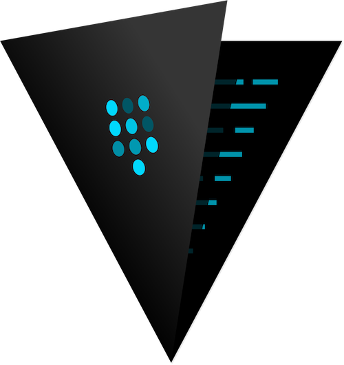

Brought to you by
A modern platform for apps
akkeris is a powerful platform for managing applications and their resources.
Focus on your app, not infrastructure
Powerful platform, powerful addons
Scale as quickly as you innovate
Enterprise security and compliance
A toolbet for modern applications
akkeris enables development and deployment of 12-factor apps quickly and seemlessly.
A platform for programmers
Invest in your code, not your infrastructure. Akkeris manages the boring bit — provisioning, infrastructure, compliance, security, monitoring, build systems, failovers, and more — so you, the programmer can stay focused on building great programs.
Simple resource provisioning
Spend your time on whawt matters. Akkeris has dozens of third-party add-ons, supports standard docker deployments, and has an eco system of plugins, and one-click deployments to immediately take advantage of others knowledge and pre-built applications and development support tooling.



Integrates with HashiCorp© Vault
Store your secrets in HashiCorp's open source tool vault, and add them as environment varibles in apps as addons.

Run on-top of world class orchastration.
Akkeris runs on-top Kubernetes by provided an easy to use, secure layer for engineers and operations to use. It also supports a variety of CNCF projects and best-of-breed load balancers such as BigIP© F5.
Variety of addons New
Built-in broker/addon support for popular services such as Twilio©, Postgres, MySQL Aurora RDS, RabbitMQ, Papertrail© and many more.
Support for your workflow
Build once, deploy everywhere. Your app can be built and deployed in a variety of workflows, don't change your process for any platform.
Build directly from Github
Akkeris supports building automatically on commits into a branch on Github.
Pipeline Support New
Place apps into pipelines, even multiple apps in multiple regions. Promote build images from one to hundreds or thousands of apps.
Directly from docker
Already have a comprehensive build system? Submit docker images directly to Akkeris.
Webhooks and Notifications
Integrate into various workflows with web hooks, be notified when an application builds, releases is promoted or restarted.
Completely open source & hackable
Own your code, control your destiny, determine your functionality
Free, open, simple
Akkeris is an entirely open source management layer on-top of existing Cloud Native projects that protects you from vendor lock-in and simplifies the engineering experience. It uses a modern technology stack with sensible components and abstractions. Akkeris is extensible through plugins and additional third-party custom addons and webhooks.
Powerful tooling New
Batteries included. Everything from a first-class JSON api, a corporate LDAP to oauth2/open id provider, a complete pluggable CLI system built on top of nodejs and a addon component system to deploy new resources and services.
Simple, powerful website management.
Create websites with a single command. Order and install DigiCert TLS multi-domain, sslplus, ev or wildcard TLS certificates all from one CLI. Route traffic on a portion of the website back to a specific application. All automatically. All securely.